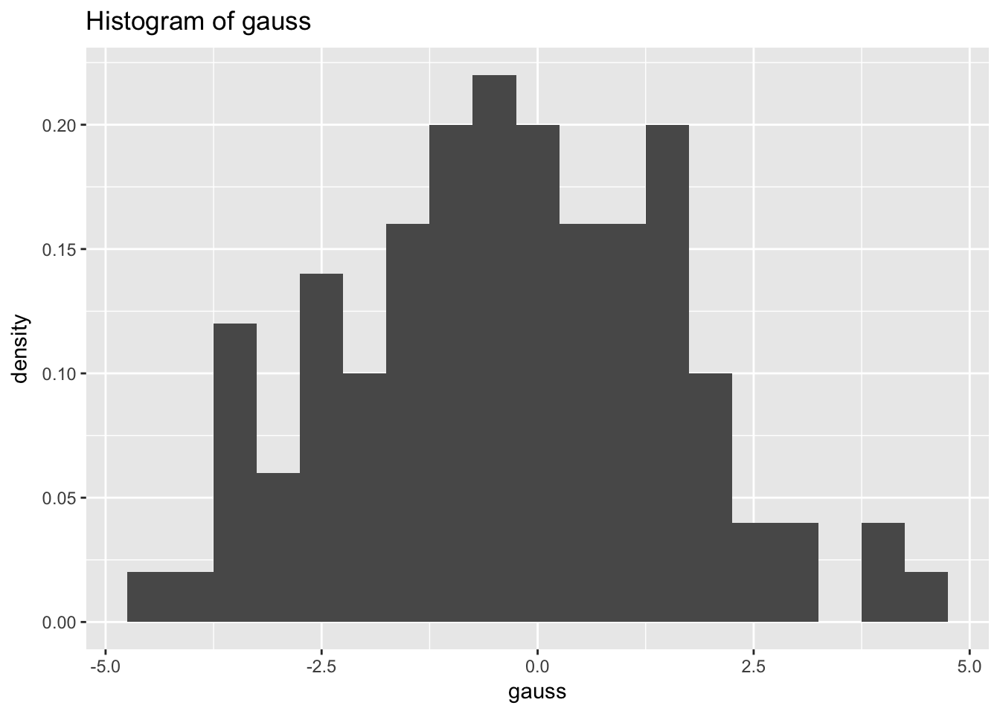

Chapter 3 Getting Started with R
3.1 Download R and R Studio
R can be downloaded at the following address http://cran.r-project.org/ from the CRAN (comprehensive R archive network; see the talk at useR!2017 20 years of CRAN.
The installation of R varies according to the operating system (Windows, MacOSX or Linux) but the functions are exactly the same and most of the programs are portable from one system to another. Installing R is very simple, just follow the instructions.
R is an interpreted language, typically accessed through a command-line interpreter. A powerful interactive development environment (IDE) oriented to R, RStudio is available to work with R. R must have already been installed before you can install RStudio. RStudio can be downloaded at the RStudio web site, the installation is also very simple.
The RStudio interface consists of several windows: The upper left can be used to edit R code (script). You can open a script with “File, New, R script”. You can click on “Run” to execute the code or use the appropriate shortcut. The bottom left corresponds to the R console. R waits for an instruction, as indicated by the symbol >. at the beginning of the line. Each instruction must be validated by Enter to be run. If the instruction is correct, R again waits for another instruction, as indicated by >. If the instruction is incomplete, R yields the symbol +. You must then complete the instruction or take control again by typing Ctrl + c or Esc. If the instruction is incorrect, an error message will appear. The upper right is the workspace with objects created. The bottom right gives the file system, plots, information about packages and help.
Before starting, it is important to set the working directory, i.e. the working folder where the data and scripts are stored. If one asked R to open a file or save a figure, it will operate in the working directory. Within RStudio the working directory can be specified with “Tools / Set working directory”. Otherwise, you should write:
setwd("../data")
list.files("./data")
if(!file.exists("data")){
dir.create("data")
}You can check your working directory using
getwd()Time for good resolutions… try to avoid:
or also

3.2 Objects
R uses functions or operators which act on objects (vector, factor, matrix, array, list, data.frame, etc.). The main modes (types) of objects are numeric (real numbers), character (“hi”), logical (boolean TRUE or FALSE), complex. Each object has two intrinsic attributes: its mode and its length. There are also other specific attributes which vary according to the type of object: dim, dimnames, class, etc. It is possible to request a list of these specific attributes by running the command: attributes(object).
3.2.1 Vectors
Vectors are atomic objects, that is to say they are of a unique type (null, logical, numeric, etc.), made up of a set of values called components, coordinates or elements. There are differents ways to create a vector as illustrated below. Selecting an elements is perfomed using the squared brackets and specifying the index of the element to select.
# creation
x <- c(2,-5,-6, 9) # concatenate
x # to print x (or print(x))
y = 1:6 # Rq: you can use = instead of <- (but the latter is my preference)
y = c(x, y)
z <- seq(1, 6 , by = 0.5)
rep(1, 4)
?rep # or help(rep) help is a function we spend our time using
rep(c(1, 2), each = 3)
# attributes
is.numeric(x); is.vector(x)
length(x)
# selection
y[4]
y[-1]
y[c(3,5)]
y[(y>2)&(y<5)] # and
y[(y<2)|(y>5)] # or
## ">", "<", ">=", "<=", "==", "!="
y[y<0] <- 10
# Hint: Hit the up arrow to display the previous commands.It is also possible to create vectors of characters:
x <- c("green","red","black","yellow")
X <- rep('A',5)
X <- tolower(X)
is.character(x)
length(x)
paste("X", 1:5, sep = "_")
paste(c("X","Y"), 1:5,"txt", sep = ".")
paste(c("X","Y"), 1:5, sep = ".", collapse = "+")Practice create the following vector:
"X_1.txt","Y_1.txt","X_2.txt","Y_2.txt",..,
"X_5.txt","Y_5.txt"Here a list of useful functions for vectors:
x <-c(12,34,5,8,9)
which.min(x)
which(x==min(x))
sort(x)
order(x)
x[order(x)]
set.seed(12)
sample(x, replace = TRUE)
txtvec <- c("arm","foot","lefroo", "bafoobar")
grep("foo", txtvec)
gsub("foo", txtvec, replacement = "DON")
substr("extraction", 1,4 )
vec <- c("A", "B", "C")
"A" %in% vec
vec <- c("B", "C")
"A" %in% vec3.2.2 Factors
Factors are vectors which enable the user to manipulate qualitative data. The categories of the factor are defined by levels. They form a class of objects and are treated differently depending on the function, such as the plot function for graphs. Factors can be non-ordinal (male, female), or ordinal (levels of scores A, B, C…).
Different functions can be used to create factors as illustrated below:
# creation
sex <- factor(c("F","M","F","F"))
sexnum <- c(1,2,1,1,2,2)
summary(sexnum)
sex <- as.factor(sexnum)
summary(sex)
levels(sex) <- c("F","M")
sex <- factor(c(1,2,1,1,2,2), labels = c("F","M"))
niveau <- ordered(c("A","A","C","B",
"B","B","B"), levels=c("A","B","C"))
# attributes
class(sex)
is.factor(sex)
nlevels(sex)
levels(sex)There are some very common transformations that can be tricky:
x <-c(rep(10,3), rep(12,2), rep(13,4))
xquali <- as.factor(x)
# modify the levels
levels(xquali)
levels(xquali)[1]="12"; levels(xquali)
# be careful with empty levels
y <- factor(c(rep("A",3),"B",rep("C",4)))
y <- y[-4]; table(y); levels(y)
as.factor(as.character(y))
# to construct cross tabulations
table(sex)
# transform a factor into a numeric vector
as.numeric(xquali)
as.character(xquali)
as.numeric(as.character(xquali))3.2.3 Matrices
Matrices are atomic objects, that is to say, they are of the same mode or type for all values. Each value of the matrix can be located by its row and column numbers and elements can be selected using the squared brackets and two indexes as illustrated hereafter:
# create a matrix
mat <- matrix(0, nrow = 2, ncol = 4)
mat <- matrix(1:9, nrow = 3, ncol = 3)
mat <- matrix(1:9, nrow = 3, ncol = 3, byrow = T) # By default, R ranks the values in a matrix by column. To rank the elements by row, use the argument byrow
# attributes
class(mat); is.matrix(mat)
length(mat)
dim(mat); ncol(mat); nrow(mat)
rownames(mat)
colnames(mat) <- paste('var', 1:3, sep = "_")
mat
# select elements
mat[1, 2]; mat[-2, 1:2]
mat[1, ]; is.vector(mat[1, ])
mat[1, , drop = F]; is.matrix(mat[1, , drop = F]) #Be careful, the argument drop = F is the only way to keep the object with one row as a matrix (thus rownames are kept)
mat[3]; mat[mat>4]=5Practice select the rows of mat when the values of the second columns are \(>3\)
Here a list of useful functions for matrices:
X = matrix(3:6, ncol = 2)
Y = matrix(8:11, ncol = 2 , byrow = T)
X+Y
X*Y # hadamard product
X%*%Y # product of matrices
t(X) # transposed
det(X)
solve(X) # inverse
svd(X)
eigen(X)
diag(X) # diagonal elements3.2.4 Lists
A list is a heterogeneous object. It is a set of ranked objects which do not always have the same mode or length. The objects are referred to as components of the list. These components can be named. Lists have an attribute length, as well as the additional attribute names. Lists are important objects as all of the functions which yield multiple objects do so in the form of a list. To extract a component from the list, we can simply indicate the position of the element that we want to extract. [[ ]] are used to identify the element in the list or $.
# create a list
mylist <- list(myvect = c(1,5,-3), mymat = mat, myfact= c("a","b"))
class(mylist)
# attributes
length(mylist)
names(mylist)
# selection
mylist$myvect
mylist[[2]]
mylist[["mymat"]]
# an element of a list can be a list
bb <- list(onelist = mylist, y = c(1,2))
length(bb)
bb$onelist$myfact3.2.5 Data frames
Data-frames may be the most important objects. They are a special type of lists with components of the same length but with potentially different modes. The data tables generally used in statistics are often referred to as data-frames. Indeed, a data table is made up of quantitative and/or qualitative variables taken from the same individuals.
Creating a data-frame can be obtained with the function data.frame to concatenate vectors of the same size but which may have different modes, with the read.table function (see section import data 3.5) to read a data table; the as.data.frame function for explicit conversion.
# create a data frame
v1 <- c(1,1,1,2,1); v2 <- c(27,54,34,21,57)
v3 <- c(177,183,190,158,178)
don <- data.frame(sex=v1, age=v2, height=v3)
# attributes
class(don)
dim(don); colnames(don); rownames(don)
summary(don) # generic function
# transformation of a numeric vector into a factor
is.factor(v1); is.numeric(v1)
don[,"sex"]=factor(don[,"sex"],label=c("M","F")) # This is one of the most current transformation very important to be sure that you have a categorical variables
summary(don)
# selection
don$height
cor(don[,2], don[,3])
# concatenate
weight <- c(60,65,89,45, 68)
don <- cbind.data.frame(don, weight) #rbind.data.frame per rowPractice create a data with individuals taller than 180.
3.2.6 Missing values
For a number of reasons, certain elements of data may not be collected during an experiment or study. These elements are known as missing data. They are therefore not available for the user and R denotes them as NA for ``Not Available’’.
In order to know where to find the missing values of an object \(x\), one must ask the question is.na(\(x\)). This yields a Boolean of the same length as \(x\). The question is asked element by element. In the case of a vector, this yields a logical vector the same length as \(x\) with TRUE if the corresponding element in is NA and FALSE if not.
Other special values should be noted here: Inf for infinity and NaN for ``Not a Number’’, values resulting from calculation problems, for example exp(1e10) or log(-2) respectively.
Here, examples of ways to identify the missing entries or to skip or replace the missing entries.
x <- c(1, 3, 2, 7, -3, NA)
is.na(x)
which(is.na(x))
mean(x, na.rm = TRUE)
mean(x[!is.na(x)])
x[is.na(x)]=0
don[1,5]=NA
is.na(don)
which(is.na(don))
which(is.na(don), arr.ind = TRUE)3.3 Installing packages
Packages are available on the CRAN network. A number of mirror sites, or exact copies of the CRAN site, are available. To install a package from CRAN, simply run the
install.packages("FactoMineR", dependencies = TRUE)You can also use Rstudio and click on the install button of the package page on the right bottom panel.
Packages need only be installed once. Once they are installed, simply load the package using the library function each time you open an R session.
library(FactoMineR)Some packages constantly evolve, with new versions regularly available. It is therefore important to update them from time to time. To do this, they must not be in use. The best solution is to update packages when you open an R session either by using the function update.packages() or by clicking on update within the R Studio package page. A list of available package updates is then displayed, all the packages can be selected.
N.B. package updates depend on the version of R used. Some packages are not compatible with past versions, or have not been compiled for these. We therefore also recommend that you regularly update your version of R before updating packages.
Some packages are installed by default with R such as the MASS packag which can be used to generate three vectors of \(R^2\) according to a multivariate normal distribution with mean \((0,1)\) and covariance matrix \(\bigl( \begin{smallmatrix} 1&0.5\\0.5&1\end{smallmatrix}\bigr)\). Look at the function mvrnorm.
To check if a package is installed you can use:
any(grepl("FactoMineR",
installed.packages())) Note also that packages contain many data sets:
data(package ="FactoMineR")Then, you can download the data with
data(decathlon)
summary(decathlon)
?decathlon3.4 Programming
R is a programming language and can be used to automate some processes. Programming in R is based on the same principles as any other software for scientific calculations. It therefore uses familiar programming structures (loops, condition if else, etc.) as well as predefined functions specific to statistical practices.
If you are doing an internship or working at Google, they suggest strict syntax for the R programs that is useful to enhance the readability of the programs.
3.4.1 Loops
Conventional loops are available in R. Let us start with the for loop. We want to display all of the integers from 1 to 99. One solution is the following:
for (i in 1:99) print(i)
for (i in seq(1, 99, by=2)) print(i) # to display only odd integersIn general there are multiple orders to be executed for each iteration. To do so, the commands must be grouped together. Generally speaking, the for loop is expressed as follows:
for (i in vector) {
expr1
expr2
...
}Another possibility of a loop is the while condition. Its general syntax is as follows:
while (condition) {
expr1
expr2
...
}The orders expr 1, expr 2, etc. are executed as long as the condition is true, and this is evaluated at the beginning of the loop. As soon as the condition is found to be false the loop is stopped. For instance:
i <- 1
while (i<3) {
print(i)
i <- i+1
}## [1] 1
## [1] 2is used to display i and to increase it by 1 while i is less than 3.
One final possibility for a loop is the order repeat. It is understood as: repeat the orders indefinitely. To ensure the loop is stopped, we use the order break. This order can be used for any loop. An example is given in the following paragraph.
3.4.2 Conditions (if, else)
This involves executing an order under condition: the order is executed if, and only if, the condition is true. In its simplest form it is written:
if (condition) {
expr1
expr2
...
}For example, if we want to use a repeat loop to print i varying from 1 to 3 inclusive, we must come out of the loop prior to printing, and when i is greater than 3:
i <- 1
repeat {
print(i)
i <- i+1
if (i>3) break
}Here, if i is greater than 3, we only need to execute a (break) order. Therefore the commands do not need to be grouped together (the curly brackets can be omitted).
In its most general form, the if, else condition is written:
if (condition){
expr1
expr2
}else{
expr1
expr2
}Be aware that the order else must be on the same line as the } closing bracket of the if clause (as above).
3.4.3 Predefined Functions
Certain functions in R are predefined in order to avoid having to use loops which generally have lengthy calculation times. The most common of these functions is undoubtedly apply, which is used to apply one function to all of the margins of a table. Let us consider the table \(X\) made up of 20 randomly chosen integers between 1 and 20. The mean for each column is calculated as follows:
X <- matrix(sample(1:20, 20), ncol = 4)
X
res <- apply(X, MARGIN = 2, FUN = mean)
resIt is also possible to add additional arguments to the function which is applied to each column. For example, if there is a missing piece of data in \(X\), it can be interesting to use the argument na.rm=TRUE of the mean function, which only calculates the mean of the present data:
X[1, 1] <- NA
apply(X, MARGIN = 2, FUN = mean, na.rm = TRUE)Due to the frequent use in statistics of means per column (or row) there is a shortcut in the form of a function colMeans or rowMeans (also colSums, rowSums):
colMeans(X, na.rm=TRUE)Here we have used the R functions mean or sum, but we could just as easily have used functions of our own which we programmed in advance. For example:
MyFunction <- function(x,y){
z <- x+sqrt(y)
return(1/z)}
X <- matrix(sample(1:20, 20), ncol = 4)
X
apply(X, MARGIN = c(1,2), FUN = MyFunction, y = 2)Many functions are based on the same principle as the apply function. For example, the tapply function applies one same function, not to the margins of the table but instead at each level of a factor or combination of factors:
Z <- 1:5
vec1 <- c(rep("A1",2),rep("A2",2),rep("A3",1))
vec2 <- c(rep("B1",3),rep("B2",2))
tapply(Z, vec1, sum)
tapply(Z, list(vec1, vec2), sum)lapply, or its equivalent, sapply, applies one same function to every element in a list. The difference between these two functions is as follows: the lapply function by default yields a list when the sapply function yields a matrix or a vector. Let us therefore create a list containing two matrices and then calculate the mean of each element of the list; here each matrix:
mat1 <- matrix(sample(12), ncol = 4)
mat1
mat2 <- matrix(sample(4), ncol = 2)
mat2
mylist <- list(matrix1=mat1,matrix2=mat2)
lapply(mylist,mean)It is even possible to calculate the sum by column of each element of the list using the apply functions as FUN function of the lapply function:
lapply(mylist,apply,2,sum,na.rm=T)## $matrix1
## [1] 20 14 18 26
##
## $matrix2
## [1] 5 5The function ‘Reduce’ can also be used as an alternative
#Reduce("+", mylist)The function ‘do.call’ is also very useful and applies a function to a list of arguments
l <- list("A", "B", "C", "D")
do.call(paste, l)## [1] "A B C D"The ‘aggregate’ function works on data-frames. It separates the data into sub-groups defined by a vector, and calculates a statistic for all of the variables of the data-frame for each sub-group. Let us reexamine the data which we generated earlier and create a data-frame with two variables Z and T:
T= 5:1
df <- data.frame(Z,T,vec1,vec2)
df
aggregate(df[,1:2],list(FactorA=vec1),sum)
aggregate(df[,1:2],list(FactorA=vec1,FactorB=vec2),sum)The sweep function is used to apply one single procedure to all of the margins in a table. For example, if we want to center and standardize the columns of a matrix X, we write:
X <-matrix(sample(12),ncol=3)
mean.X <- apply(X,2,mean)
mean.X
sd.X <- apply(X,2, sd)
sd.X
Xc <- sweep(X,2,mean.X,FUN="-")
Xc
Xcr <- sweep(Xc,2,sd.X,FUN="/")
XcrIt must be noted that to center and standardize table X, we can more simply use the scale function.
The by function, however, is used to apply one function to a whole data-frame for the different levels of a factor or list of factors. This function is thus similar to the tapply function, as it is used with a data-frame rather than a vector. Let us generate some data:
T <- rnorm(100)
Z <- rnorm(100)+3*T+5
vec1 <- c(rep("A1",25),rep("A2",25),rep("A3",50))
don <- data.frame(Z,T)We can thus obtain a summary of each variable for each level of the factor vec1:
by(don,list(FactorA=vec1),summary)There are also other functions such as the replicate function which is used to repeat an expression n times. For example:
replicate(n=8, mean(rnorm(100)))The outer function is used to repeat a function for each occurrence of the combination of two vectors. For example:
Month <- c("Jan","Feb","Mar")
Year <- 2008:2010
outer(Month,Year,FUN="paste")## [,1] [,2] [,3]
## [1,] "Jan 2008" "Jan 2009" "Jan 2010"
## [2,] "Feb 2008" "Feb 2009" "Feb 2010"
## [3,] "Mar 2008" "Mar 2009" "Mar 2010"Again, it is possible here to add arguments to the chosen function. Here, we separate the months and the years by a dash rather than a space, which is the default character:
outer(Month,Year,FUN="paste",sep="-")## [,1] [,2] [,3]
## [1,] "Jan-2008" "Jan-2009" "Jan-2010"
## [2,] "Feb-2008" "Feb-2009" "Feb-2010"
## [3,] "Mar-2008" "Mar-2009" "Mar-2010"3.4.4 Creating a Function
Functions are used to carry out many different R commands. Functions return one unique result object. These resulting objects are specified within the functions by the return function. By default, if the written function yields no result, the last result obtained prior to output is returned as the result.
Let us begin with a simple example, the sum of the first \(n\) integers. The number \(n\) is an integer which is the input argument, the result is simply the sum, as requested:
mysum <- function(n){
if (n<=0) stop("n must be a positive integer")
if (floor(n)!=n) warning(paste("rounds",n,"as",floor(n)))
result <- sum(1:floor(n))
return(result)
}The function is called upon using its name (mysum), followed by the input arguments between brackets. Here, the function has one argument as input. It is therefore called upon by simply using:
mysum(3)## [1] 6res <- mysum(3)
res## [1] 6mysum(4.54)## Warning in mysum(4.54): rounds 4.54 as 4## [1] 10We shall now suggest a function with two input arguments: factor 1 and factor 2, two qualitative variables. This function yields the contingency table as well as the character vector for the levels of factor 1 and factor 2, for which the combined sample size is zero. Here, more than one result will be returned. As one will be a table and the other a character vector (or character matrix), these two objects cannot be brought together in a matrix (they are not of the same type), nor can they be combined in a data-frame (they are not the same length). The only possible result will therefore be a list grouping together these two results. The function will therefore calculate the contingency table and then select the void cells. We then need to know the indices corresponding to the void cells of the contingency table (which function, option arr.ind=TRUE) and identify the names of the corresponding categories:
myfun <- function(factor1,factor2){
res1 <- table(factor1,factor2)
selection <- which(res1==0,arr.ind = TRUE)
res2 <- matrix("",nrow=nrow(selection),ncol=2)
res2[,1] <- levels(factor1)[selection[,1]]
res2[,2] <- levels(factor2)[selection[,2]]
return(list(tab=res1,level=res2))
}If we call upon the function with the factors wool and tension:
tension <- factor(c(rep("Low",5),rep("High",5)))
wool <- factor(c(rep("Mer",3),rep("Ang",3),rep("Tex",4)))
myfun(tension,wool)## $tab
## factor2
## factor1 Ang Mer Tex
## High 1 0 4
## Low 2 3 0
##
## $level
## [,1] [,2]
## [1,] "High" "Mer"
## [2,] "Low" "Tex"The function can be saved as follows:
save(myfun.R)and loaded with
source(myfun.R)Practice Look at the begining of the function imputeada of the denoiseR package and comment the housekeeping part.
Run the following code to understand well the use of lapply and Reduce.
nbsim <-5
lossFrob <- function(X.loss) sum((X.loss - MU)^2)
n <- 200
p <- 500
sigma <- 1/(SNR*sqrt(n*p))
k <- 100
SNR <- 1
results.list <- lapply(1:nbsim, function(iter){
Xsim <- LRsim(n = n, p = p, k = k, SNR = SNR)
X <- Xsim$X
MU <- Xsim$mu
TSVD.muhat <- reconst(PCA(X, graph = F, scale = F, ncp = k), k)
TSVD.loss <- lossFrob(TSVD.muhat)
TSVD_opt.res <- optishrink(X, sigma = sigma, center = "TRUE", method = "ASYMPT")
TSVD_opt.loss <- lossFrob(TSVD_opt.res$mu.hat)
ISA.res <- ISA(X, sigma = sigma, maxiter = 50)
ISA.loss <- lossFrob(ISA.res$mu.hat)
loss.res <- rbind(ISA=ISA.loss, TSVD=TSVD.loss, TSVD_opt=TSVD_opt.loss)
nbeig <- rbind(ISA=ISA.res$nb.eigen, TSVD=k, TSVD_opt= TSVD_opt.res$nb.eigen)
cbind.data.frame(loss.res, nbeig)
})
results <- Reduce("+", results.list) / length(results.list)3.4.5 Practice
3.4.5.1 Syracuse conjecture
The Syracuse algorithm, or \(3x+1\) algorithm, works as follows: let’s start with a natural number \(n \in \mathbb{N}^\star\). If \(n\) is even it is divided by two, else if \(n\) is odd it is multiplied by 3 and 1 is added. The process is then repeated. For instance, let’s start with 5, we will get, 5, 16, 8, 4, 2, 1. The conjecture states that the process will end up on 1 and indefinitely cycle: from this number, we will cycle 4,2, 1.
Create a function syracuse taking \(n\) as an input, and generate Syracuse numbers and stop when 1 is reached.
Plot the length of the vectors for each number.
What is the maximal length reached? For which number? Reprensent the Syracuse serie.
3.4.5.2 Dealing with rare categories
Let’s consider the following qualitative variable:
Xfac <- factor(c(rep("A",60),rep("B",20),rep("C",17),
rep("D",3)))The idea of ventilation\(^{1}\) is to allocate the individuals which select a category taken by less than 5% of the individuals at random according to the frequencies of the other categories. Indeed, rare categories may be problematic in some cases.
Write a function ventilation which take both a variable and the threshold from which categories must be ventilated as input. Set the threshold to 5% by default. Write a function so that all of the qualitative variables in a table can be ventilated.
An alternative is to gather categories when it make sense such as when the categories are ordered.
Xfac <- factor(c(rep("0-10",1),rep("11-20",3),rep("21-30",5),
rep("31-40",20),rep("41-50",2),rep("51-60",2),
rep("61-70",1),rep("71-80",31),rep("+ 80",20)))You can start with the weakest (according to the order of the categories) categories and if the number of the individuals is smaller than 5%, merge this category with the category immediately above. If the sample size of these two merged categories is greater than 5% of the total, go on to the next category (if there is one). If not, merge again with the category immediately above (out of all of the categories). Proceed in the same way until all of the categories have been used.
Write a function so that all of the ordered qualitative variables in a table can be ventilated.
You can apply your function to the Credit data sets.
The dataset contains information from 66 clients who took out loans from a credit company. The 11 qualitative variables and the associated categories are as follows:
* Loan: Renovation, Car, Scooter, Motorbike, Furnishings, Sidecar. This variable represents the item for which clients took out a loan.
* Deposit: yes, no. This variable indicates whether or not clients paid a deposit before taking out the loan. A deposit represents a guarantee for the loan organisation.
* Unpaid: 0, 1 or 2, 3 and more. This variable indicates the number of unpaid loan repayments for each client.
* Debt load: 1 (low), 2, 3, 4 (high). This variable indicates the client’s debt load. The debt load is calculated as the ratio between costs (sum of expenses) and income. The debt load is divided into 4 classes.
* Insurance: No insurance, DI (Disability Insurance), TPD (Total Permanent Disability), Senior (for people over than 60). This variable indicates the type of insurance the client has taken out.
* Family: Common-law, Married, Widower, Single, Divorcee.
* Children: 0, 1, 2, 3, 4 and more.
* Accommodation: Home owner, First-time buyers, Tenant, Lodged by family, Lodged by employer.
* Profession: Technician, Manual Labourer, Retired, Management, Senior management.
* Title: Mr., Mrs., Miss.
* Age: 20 (18 to 29 years old), 30 (30 to 39), 40 (40 to 49), 50 (50 to 59), 60 and over.
The aim of the study is to characterise the credit company’s clientele. (identify the different banking behaviour profiles and study the relationship with the labels (profession, age, etc.). This data can be described with Multiple Correspondence Analysis (the equivalent of PCA for categorical data and chi-squares tests).
3.4.6 Distributions
Functions for probability distributions are named as follows. The first letter indicates: d for density, p for the cumulative distribution, q for quantiles. Then, you add binom for binomial, norm for normal, etc. Then specific parameters are specified for each family. Look at help(runif), ?dbinom, dnorm, pchisq, qt (quantile for student), df (for fisher) etc…
Practice: Simulation Simulation consits in drawing a sample (\(X_1\), …, \(X_n\)) of i.i.d variables with the same law of the random variable \(X\).
Functions to simulate in R work as previously but use the prefix r. For instance:
gauss <- rnorm(100, 0, 2)
library(ggplot2)
qplot(gauss, geom="histogram", main="Histogram of gauss",y=..density.., binwidth=0.5)
In the following code, we plot the density of a Gaussian \(\mathcal N(0.1)\). Then, on the same graph, we represent Student distributions with 2 to 30 ddf, and add a legend.
x<- seq(-4, 4, by = 0.1)
df <- data.frame(x=rep(x,3), value=c(dnorm(x), dt(x,2), dt(x,30)), type=factor(c(rep("N(0,1)",length(x)), rep("T2",length(x)), rep("T30",length(x)))))
ggplot(df)+geom_line(aes(x=x, y=value, colour=type))
legend("topleft",legend=c("N(0,1)","T2", "T30"),col=c("red","yellow","blue"),lty=1)Let’s simulate a ChiSquare and a Fisher distribution.
Let \(X_1,...,X_d\) i.i.d. from a Gaussian (0,1), then \(Y=\sum_{j=1}^dX_j^2\) follows a \(\chi^2\) distribution with \(d\) degrees of freedom: \(Y\sim\chi_d^2\).
You can generate \(d=20\) samples of size \(n = 500\) for instance from a \(\mathcal N(0,1)\). Then generate a Chi square distribution, represent its histogramm and superimpose the distribution of the Chi-square.
The same procedure can be used to generate a Fisher distribution. (\(U\sim\chi^2(k)\), \(V\sim\chi^2(\ell)\) with \(U\) and \(V\) independent, then \[\frac{U/k}{V/\ell}\] follows a Fisher with \(k\) and \(\ell\) ddf. Take as an example \(k=8\) and \(\ell=16\).
3.4.6.1 Central limit Theorem
- Draw a sample of size \(n = 20\) from the Uniform distribution on [0,1]. Represent its distribution. Compute its empirical mean.
- Draw 1000 samples of size \(n = 20\) from the Uniform distribution on [0,1]. On each sample compute its empirical mean. Represent the distribution of the means as well as the cumulative distribution.
- Create a function that takes as an input \(n\) and performs the previous steps.
- Represent the distribution of the mother distribution (of \(X\)), as well as the one of \(\bar X\) as a function of \(n\) (take \(n=2\), \(n=5\), \(n=10\), \(n=30\), \(n=100\)). Comment.
- Repeat the process for a Gaussian distribution (\(\mathcal{N}(175,100)\)) a Chi 2 with 1 degree of freedom, an exponential distribution. Comment.
3.4.6.2 Variance-stabilizing
In statistics, we often use variance-stabilizing transformation (VST). Let \(T_n(X_1, ... X_n)\) be an estimator of a parameter \(\theta\) linked to the independent observations \(X_i\). We suppose that the central limit theorem applies and that for all \(\theta\), \(\sqrt{n}(T_n-\theta) \Rightarrow \mathcal{N}(0, \sigma^2(\theta))\). This means that we have: \[ \mathbb{P}_\theta\left(T_n-z_{1-\alpha/2}\frac{\sigma(\theta)}{\sqrt{n}} \leq \theta \leq T_n + z_{1-\alpha/2}\frac{\sigma(\theta)}{\sqrt{n}}\right) \rightarrow 1 - \alpha \] where \(z_{1-\alpha/2}\) is the quantile or order \(1-\alpha/2\) of \(\mathcal{N}(0,1)\). The confidence interval depends on the parameter \(\theta\) to be estimated. One workaround is to use the empirical variance and by Slutsky’s lemma, we have the same confidence interval with \(\sigma(\theta)\) replaced by the empirical variance \(\sigma(T_n)\). Another workaround that we illustrate here is to use a variance-stabilizing transformation. The idea is to use the Delta method that gives for a function \(g\): \[\sqrt{n}(g(T_n)-g(\theta)) \Rightarrow \mathcal{N}(0, (g'(\theta))^2 \sigma^2(\theta))\] and to choose \(g\) appropriately in order to have \((g'(\theta))^2 \sigma^2(\theta))=\text{constant}\).
Let us take an example. Let \((X_n)\) be a sequence of iid variable following a Bernoulli law of parameter \(\theta\).
- For \(\theta=0.1\) and \(0.5\), simulate 1000 Bernoulli of parameter \(\theta\) and compute the confidence interval using the CLT, and an empirical variance.
- Draw 1000 sample of size \(n=20, 50, 100\) from a Bernoulli of parameter \(\theta=0.1, 0.5\). Check empirically the confidence interval that you derived above.
- Find the right \(g\) for a VST.
- Repeat the two first questions using \(g\) and the VST (without empirical variance).
3.4.6.3 Law of large Numbers
- State the law of large numbers
- Draw a sample \((x_1,...,x_{1000})\) from a Bernoulli distribution with \(p=0.6\).
- Compute successive means \(M_\ell=S_\ell/\ell\) where \(S_\ell=\sum_{i=1}^\ell X_i\) (you can use cumsum).
- Plot \(M_\ell\) as a function of \(\ell\) and add an horizontal line at \(y=0.6\) with abline(h=0.6).
3.5 Import data
(Classical) data are generally contained within a file in which the individuals are presented in rows and the variables in columns. The classical way to read a data file is to use the function read.table or read.csv as follows:
?read.table
ozone <- read.table("data/ozone.txt", header = TRUE, dec = ".", sep =" ")
dim(ozone)
summary(ozone)
ozone <- read.table("data/ozone.txt", header = TRUE, dec = ".", row.names = 1) # Be careful, the first column corresponds to the names of the rows
summary(ozone)The sep option indicates between quotation marks the character which separates the columns. For a space, use " “, and for a tabulation”“. The argument header indicates whether or not the first row contains the names of the variables (TRUE if so, otherwise FALSE). The argument dec specifies that the decimal point is a”." . Finally, the argument row.names indicates that column 1 is not a variable but the row identifier: here the individuals’ names.
All of the first names must therefore be different. This identifier is generally a string of characters or the identification number of the individual. In some cases, individuals do not have identifiers and/or the variables do not have names.
It must be noted that the result of the importation is always a data-frame type object. The types of variables are inferred by the importation function, which can be wrong! It is therefore necessary to check each variable type using the summary function.
The path can also be an URL:
decath <- read.table("http://www.agrocampus-ouest.fr/math/
RforStat/decathlon.csv",sep=",", dec=".", header = TRUE, row.names = 1)Note that the use of the package data.table may become mainstream to import data. It reads data much faster than read.table using the fread function. fread automatically infers the separator as well as if the first row corresponds to the name of the variables. However, fread creates an object of the class data.table which is a bit different from a data.frame object. We will come back to this function.
ozone_fast <- fread("data/ozone.txt", stringsAsFactors = TRUE)Within R, it is possible to import data from many other formats:
- From Excel, HTML, XML, JSON, SPSS, SAS, STATA, relational data base MongoDB, MySQL, etc. Many packages are available and explained at this datacamp tutorial. We will detail later how to do webscrapping within R. A reference book on this topic is that of XML and Web Technologies for Data Sciences with R by Deborah Nolan and Duncan Temple Lang (2013).
3.6 First descriptive statistics
Since we have imported data, we should start inspecting the data, practice our skills and do our first descriptive analysis. However, any analysis has to be reproducible and so we warmly recommend to use a reproducible framework such as RMarkdown (see Chapter 4) for this purpose.
Just a bit of background on the data.
Air pollution is currently one of the most serious public health worries worldwide. Many epidemiological studies have proved the influence that some chemical compounds, such as sulphur dioxide (SO2), nitrogen dioxide (NO2), ozone (O3) can have on our health. Associations set up to monitor air quality are active all over the world to measure the concentration of these pollutants. They also keep a record of meteorological conditions such as temperature, cloud cover, wind, etc. Here the final aim is to analyse the relationship between the maximum daily ozone level and meteorological variables. We have at our disposal 112 observations collected during the summer of 2001 in Rennes by AirBreizh. The variables available are maxO3 (maximum daily ozone), maxO3v (maximum daily ozone the previous day), T12 (temperature at midday), T9, T15 (Temp at3pm), Vx12 (projection of the wind speed vector on the east-west axis at midday), Vx9 and Vx15, as well as the Nebulosity (cloud) Ne9, Ne12, Ne15.
You can visualize your data:
View(ozone)
head(ozone)
ozone[1:2, ]
ozone$T9
oz <- ozone[, c("T12","maxO3","vent")] Practice
* Find the hottest day at noon.
* Select the values of maxO3 when the wind comes from est.
* Create a data base with rainy days.
* Order the data in ozone according to the variable Temperature at 9.
Let’s examine the summary and review some concepts.
summary(ozone)
cor(ozone[,"maxO3y"], ozone[, "maxO3"])By default, R compute the Pearson correlation coefficient. To study other relations than linear ones, it is possible to use Spearman’s \(\rho\) and Kendall’s tau which are based on ranks.
cor(ozone[,"maxO3y"], ozone[, "maxO3"], method = "kendal")Note that the topic of measures of association and tests of independence is a very active research area! New measures with better statistical properties are suggested (Bergsma and Dassios, 2014 Bernouilli: A consistent test of independence based on a sign covariance related to Kendall’s tau). The article of Szekely, Rizzo, Bakirov, 2007, Ann. Statist, Measuring and testing dependence by correlation of distances, had a major impact since he get measures and tests that are consistent against all alternatives. An R package dcov is associated to this work.
You can easily do your first graphs:
hist(ozone[,"T9"], prob=TRUE, col="red",
main= "Histogram of T9",
xlab="T9") hist(subset(ozone, wind == "East")$maxO3, col=6)boxplot(ozone[,"T9"], ylab = "T9")Practice Manipulate data.
Load the wine data in FactoMineR. data(wine)
- Summary the data - gives its dimension.
- Select the wines with a score on Overall.quality greater than 3.5.
- Compute the means of the Alcohol variable for the wines which are highly appreciated >3.5 and for the wines which are less appreciated.
- Create a new variable for typical: round the variable to the closest integer (use function round); transform this variable in a factor; rename the categories with “not typical”, “typical”, “very typical” ; gather the two first categories; add this new variable to the data set.
- Create a data set called Env2 with wines only from Soil Env2.
- Remove the variable Soil from your new data set Look at the levels of the variable Label. Transform this variable not to have a level with 0 individual.
(hint: Env2$Label= as.factor(as.character(Env2$Label)) - Export the data with the name Envi.txt
- Use the initial data. By using the cut function, cut the variable Spice in 3 clusters (< 2 ; between 2 and 2.5 ; > 3). Using the quantile function, cut the variable Spice in 3 cluster of same size. Remark: one can also use the quantile function with the default quantiles (0,25,50,75,100%)
- Create a new variable which is a combination of the two categorical variables “Label” and “Soil” (you could use the function paste). The new variable that we want is a factor containing the two variables Label and Soil (“Saumur Env1” )